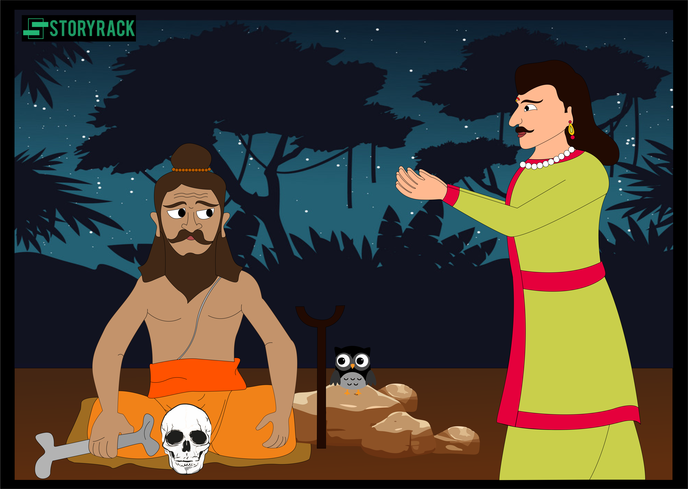

એક બાબત માટે, રાત્રિનો અંધકાર પોતે જ ભયાનક હતો; આનાથી વધુ, ધોધમાર વરસાદ એટલો અવિરત હતો કે જાણે તે આખી રાત વરસાદ પડશે; જ્યારે ગોબ્લિન અને ભૂત પણ એવો હંગામો મચાવતા હતા કે હિંમતવાન નાયકો પણ તમાશો જોઈને ઉશ્કેરાયા હોત;—જોકે રાજા પોતાના માર્ગે ચાલ્યો ગયો. સાપ, જેઓ સતત આવતા અને તેના પગમાં પોતાની જાતને જોડતા, તે વારંવાર મંત્રોચ્ચાર કરીને તેને વિખેરી નાખતો. લંબાણપૂર્વક, જ્યારે કોઈક રીતે અથવા અન્ય રીતે જોખમી રસ્તા પરથી પસાર થયા પછી, રાજા સળગતી જમીન પર પહોંચ્યો, ત્યારે તેણે જોયું કે ગોબ્લિન સતત માણસોને પકડે છે અને તેમનો નાશ કરે છે; ડાકણો સતત બાળકોના લીવરને ચૂસી રહી છે; વાઘ ગર્જના કરી રહ્યા હતા, અને હાથીઓ ચીસો પાડી રહ્યા હતા. ટૂંકમાં, જ્યારે તેણે ઝાડ પર ધ્યાન આપ્યું, ત્યારે તેણે જોયું કે તેના દરેક પાંદડા અને ડાળીઓ, મૂળથી ટોચની ડાળી સુધી, પ્રકોપથી સળગી રહી છે, જ્યારે ચારે બાજુથી "તેને મારી નાખો! તેને મારી નાખો! તેને પકડો! તેને પકડો! તે છટકી ન જાય તેનું ધ્યાન રાખો!”
રાજાને વસ્તુઓની તે સ્થિતિ જોઈને કોઈ ડર ન હતો; પરંતુ તેણે પોતાની જાતને કહ્યું, "એવું હોઈ શકે કે ન પણ હોય, પણ (મને ખાતરી છે કે) આ એ જ ભક્ત છે જેના વિશે રાક્ષસે મારી સાથે વાત કરી હતી." અને નજીક જઈને જોયા પછી, તેણે એક શબને દોરીથી બાંધેલું જોયું. , અને માથું નીચે તરફ લટકાવ્યું. તે લાશને જોઈને ખુશ થયો, વિચાર્યું કે તેની મુશ્કેલીનું વળતર મળ્યું છે. તેની તલવાર અને ઢાલ લઈને, તે નિર્ભયપણે ઝાડ પર ચઢી ગયો, અને તલવારથી એવો ફટકો માર્યો કે દોરડું તૂટી ગયું અને લાશ પડી ગઈ. નીચે ઊતર્યો અને તરત જ મોટેથી રડવા લાગ્યો. તેનો અવાજ સાંભળીને રાજા ખુશ થઈ ગયો અને મનમાં કહેવા લાગ્યો, "આ માણસ ઓછામાં ઓછો જીવતો છે." પછી નીચે ઉતરીને તેણે તેને પૂછ્યું કે તે કોણ છે. સાંભળતાની સાથે જ હસવું > (પ્રશ્ન).આ સાંભળીને રાજા ખૂબ જ આશ્ચર્યચકિત થઈ ગયો. ફરીથી લાશ ઝાડ પર ચઢી ગઈ અને તેને લટકાવી દીધો. રાજા પણ તે જ ક્ષણે ઉપર ચઢી ગયો અને તેને પોતાના હાથ નીચે પકડીને તેને નીચે લાવ્યો અને કહ્યું, "અધમ દુષ્ટ! મને કહો કે તું કોણ છે." તેણે કોઈ જવાબ ન આપ્યો. રાજાએ ચિંતન કર્યું અને પોતાની જાતને કહ્યું, "કદાચ આ તે જ તેલવાળો છે જેને રાક્ષસે કહ્યું હતું કે જ્યાં મૃતદેહ બાળી નાખવામાં આવે છે તે જગ્યાએ ભક્તે જમા કર્યા છે." આમ પ્રતિબિંબિત કરીને, તેણે તેને તેના આવરણમાં બાંધ્યો અને તેને ભક્ત પાસે લઈ આવ્યો. જે માણસ આવી હિંમત દર્શાવે છે તે તેના ઉપક્રમોમાં સફળ થશે.
પછી સ્પ્રાઈટ *એ કહ્યું, "તું કોણ છે? અને તું મને ક્યાં લઈ જઈ રહ્યો છે?" રાજાએ જવાબ આપ્યો, "હું રાજા વિક્રમ છું, અને તને એક ભક્ત પાસે લઈ જઈ રહ્યો છું." તે ફરી જોડાયો, "હું એક શરતે જઈશ, જો તમે રસ્તામાં એક શબ્દ પણ બોલશો તો હું સીધો પાછો આવીશ." રાજા તેની શરત માની ગયો અને તેની સાથે ચાલ્યો ગયો. ત્યારે પરમાત્માએ કહ્યું, "હે રાજા! જેઓ વિદ્વાન, વિવેકી અને જ્ઞાની હોય છે - તેમના દિવસો ગીત અને શાસ્ત્રોના આનંદમાં પસાર થાય છે, જ્યારે મૂર્ખ અને મૂર્ખ લોકોના દિવસો નિદ્રા અને નિદ્રામાં પસાર થાય છે. શ્રેષ્ઠ છે કે આ લાંબો રસ્તો નફાકારક વાર્તાલાપ દ્વારા છેતરવામાં આવે: હે રાજા, તમે હાજરી આપો છો! હું જે વાર્તાનો સંબંધ કરું છું.
| પેજ નંબર ૫ | ||